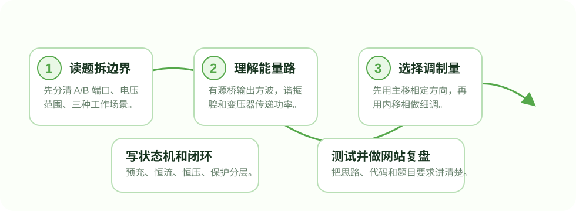

先把题目翻译成工程指标
我先没有急着写 PWM，而是把题目拆成 A 侧、B 侧和三种开关组合。A 侧是 10V-15V 铅酸范围，B 侧是 3V-4.2V 锂电范围；真正要控制的是电流、截止电压和功率方向。
Student Journey
这个网站不是只把题目复制一遍，而是把我作为学生完成 SR-DAB 试验装置时的思考路径讲出来： 先读懂题目，再把电源拓扑、调制方式、控制状态机和固件工程连成一条线。

我先没有急着写 PWM，而是把题目拆成 A 侧、B 侧和三种开关组合。A 侧是 10V-15V 铅酸范围，B 侧是 3V-4.2V 锂电范围；真正要控制的是电流、截止电压和功率方向。
题目要求功率由变压器隔离传输，且前后两级通信也要隔离。DAB/SR-DAB 的两个有源桥正好适合双向能量流，串联谐振腔则帮助限制电流并改善软开关条件。
我先用单移相理解“相位差决定功率方向”，再意识到低压大电流场景只靠一个移相角不够细。于是工程里把主移相、左桥内移相、右桥内移相拆开控制。
固件不是一个巨大的 while 循环，而是 ADC 采样、信号处理、TPS 状态机、HRTIM 输出、LCD 显示和串口工具分层。这样出问题时能知道是采样、判断还是输出环节出了问题。
What I Learned
低压大电流题目看上去电压不高，但控制和工程细节一点都不轻松。采样噪声、相位分辨率、软开关窗口、保护边界和人机交互都会影响最终效果。